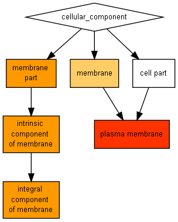

P-value color scale
| > 10-3 |
10-3 to 10-5 |
10-5 to 10-7 |
10-7 to 10-9 |
< 10-9 |

| GO term |
Description |
P-value |
FDR q-value |
Enrichment (N, B, n, b) |
Genes |
| GO:0005886 |
plasma membrane |
2.75E-10 |
2.21E-7 |
5.42 (9332,1721,13,13) |
[+] Show genes
CCR4 - serine/threonine-protein kinase-like protein ccr4
THE1 - receptor-like protein kinase theseus 1
AT5G18500 - probable receptor-like protein kinase
RKF3 - putative lrr receptor-like serine/threonine-protein kinase rkf3
AT5G48740 - putative lrr receptor-like serine/threonine-protein kinase
WAKL1 - wall-associated receptor kinase-like 1
HSL2 - haesa-like 2
AT1G67720 - putative lrr receptor-like serine/threonine-protein kinase
IKU2 - leucine rich repeat kinase haiku 2
CLV1 - receptor protein kinase clavata1
SRF4 - strubbelig-receptor family 4
WAK4 - wall-associated receptor kinase 4
AT1G07550 - putative lrr receptor-like serine/threonine-protein kinase
|
| GO:0016021 |
integral component of membrane |
1.78E-9 |
7.15E-7 |
4.70 (9332,1986,13,13) |
[+] Show genes
CCR4 - serine/threonine-protein kinase-like protein ccr4
THE1 - receptor-like protein kinase theseus 1
AT5G18500 - probable receptor-like protein kinase
RKF3 - putative lrr receptor-like serine/threonine-protein kinase rkf3
AT5G48740 - putative lrr receptor-like serine/threonine-protein kinase
WAKL1 - wall-associated receptor kinase-like 1
HSL2 - haesa-like 2
AT1G67720 - putative lrr receptor-like serine/threonine-protein kinase
IKU2 - leucine rich repeat kinase haiku 2
CLV1 - receptor protein kinase clavata1
SRF4 - strubbelig-receptor family 4
WAK4 - wall-associated receptor kinase 4
AT1G07550 - putative lrr receptor-like serine/threonine-protein kinase
|
| GO:0031224 |
intrinsic component of membrane |
3.55E-9 |
9.51E-7 |
4.46 (9332,2094,13,13) |
[+] Show genes
CCR4 - serine/threonine-protein kinase-like protein ccr4
THE1 - receptor-like protein kinase theseus 1
AT5G18500 - probable receptor-like protein kinase
RKF3 - putative lrr receptor-like serine/threonine-protein kinase rkf3
AT5G48740 - putative lrr receptor-like serine/threonine-protein kinase
WAKL1 - wall-associated receptor kinase-like 1
HSL2 - haesa-like 2
AT1G67720 - putative lrr receptor-like serine/threonine-protein kinase
IKU2 - leucine rich repeat kinase haiku 2
CLV1 - receptor protein kinase clavata1
SRF4 - strubbelig-receptor family 4
WAK4 - wall-associated receptor kinase 4
AT1G07550 - putative lrr receptor-like serine/threonine-protein kinase
|
| GO:0044425 |
membrane part |
1.46E-8 |
2.93E-6 |
4.00 (9332,2334,13,13) |
[+] Show genes
CCR4 - serine/threonine-protein kinase-like protein ccr4
THE1 - receptor-like protein kinase theseus 1
AT5G18500 - probable receptor-like protein kinase
RKF3 - putative lrr receptor-like serine/threonine-protein kinase rkf3
AT5G48740 - putative lrr receptor-like serine/threonine-protein kinase
WAKL1 - wall-associated receptor kinase-like 1
HSL2 - haesa-like 2
AT1G67720 - putative lrr receptor-like serine/threonine-protein kinase
IKU2 - leucine rich repeat kinase haiku 2
CLV1 - receptor protein kinase clavata1
SRF4 - strubbelig-receptor family 4
WAK4 - wall-associated receptor kinase 4
AT1G07550 - putative lrr receptor-like serine/threonine-protein kinase
|
| GO:0016020 |
membrane |
2.74E-7 |
4.4E-5 |
3.19 (9332,2923,13,13) |
[+] Show genes
CCR4 - serine/threonine-protein kinase-like protein ccr4
THE1 - receptor-like protein kinase theseus 1
AT5G18500 - probable receptor-like protein kinase
RKF3 - putative lrr receptor-like serine/threonine-protein kinase rkf3
AT5G48740 - putative lrr receptor-like serine/threonine-protein kinase
WAKL1 - wall-associated receptor kinase-like 1
HSL2 - haesa-like 2
AT1G67720 - putative lrr receptor-like serine/threonine-protein kinase
IKU2 - leucine rich repeat kinase haiku 2
CLV1 - receptor protein kinase clavata1
SRF4 - strubbelig-receptor family 4
WAK4 - wall-associated receptor kinase 4
AT1G07550 - putative lrr receptor-like serine/threonine-protein kinase
|
Species used: Arabidopsis thaliana
The system has recognized 9835 genes out of 15778 gene terms entered by the user.
9835 genes were recognized by gene symbol and 0 genes by other gene IDs .
323 duplicate genes were removed (keeping the highest ranking instance of each gene) leaving a total of 9512 genes.
Only 9332 of these genes are associated with a GO term.
The GOrilla database is periodically updated using the GO database and other sources.
The GOrilla database was last updated on Jul 7, 2018
This results page will be available on this site for one month from now (until
Aug 6, 2018
). You can bookmark this page and come back to it later.
'P-value' is the enrichment p-value computed according to the mHG or HG model. This p-value is not corrected for multiple testing of 803 GO terms.
'FDR q-value' is the correction of the above p-value for multiple testing using the Benjamini and Hochberg (1995) method.
Namely, for the ith term (ranked according to p-value) the FDR q-value is (p-value * number of GO terms) / i.
Enrichment (N, B, n, b) is defined as follows:
N - is the total number of genes
B - is the total number of genes associated with a specific GO term
n - is the number of genes in the top of the user's input list or in the target set when appropriate
b - is the number of genes in the intersection
Enrichment = (b/n) / (B/N)
Genes: For each GO term you can see the list of associated genes that appear in the optimal top of the list.
Each gene name is specified by gene symbol followed by a short description of the gene
Back to the GOrilla main page